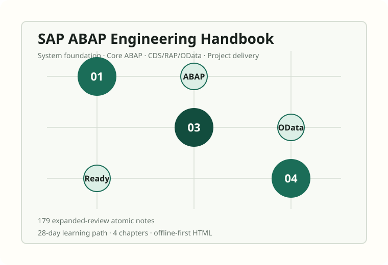

Offline Technical Book
一个月精通 SAP ABAP
From Programming Fundamentals to S/4HANA Project Delivery1か月でマスターする SAP ABAP

179section pages
28day learning path
4book chapters
Offlinelocal CSS, JS and search
Book Chapters
Chapter 01Chapter 01 - SAP 和 ABAP 基础40 sections. 从概念、机制、项目语境到练习任务逐节展开。Chapter 02Chapter 02 - Core ABAP Programming47 sections. 从概念、机制、项目语境到练习任务逐节展开。Chapter 03Chapter 03 - CDS、RAP、OData49 sections. 从概念、机制、项目语境到练习任务逐节展开。Chapter 04Chapter 04 - Project Delivery And Production Readiness43 sections. 从概念、机制、项目语境到练习任务逐节展开。
Reading Shape
先建立 SAP 语境把 system landscape、repository object、transport、Clean Core 放进同一个项目世界。
再掌握 ABAP 编程用现代 ABAP、DDIC、Open SQL、异常、测试和 ATC 建立可维护代码习惯。
最后走向交付围绕 CDS、RAP、OData、日本项目现场和上线检查组织实战能力。